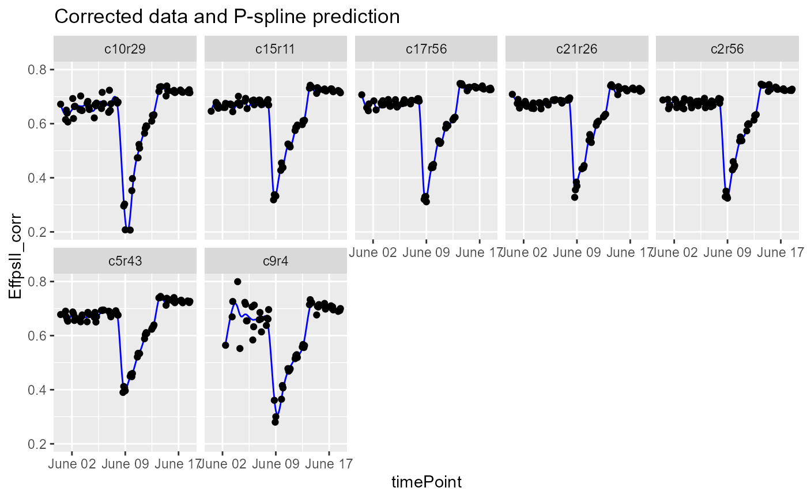
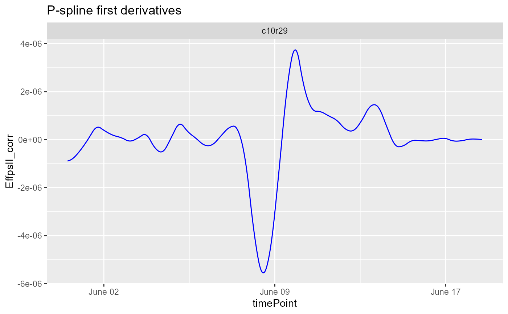
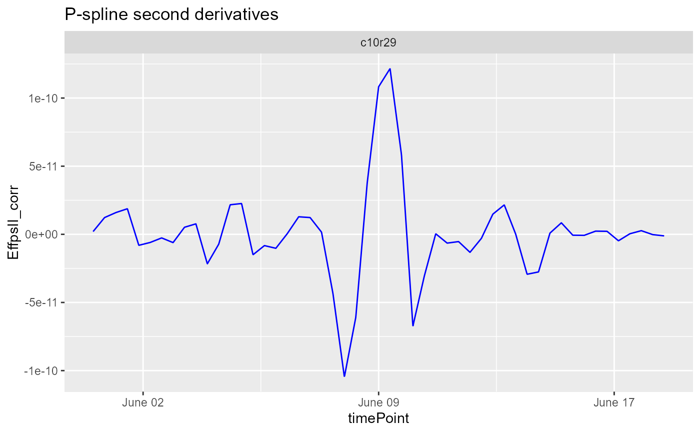

Plot the results of a fitted spline.
# S3 method for HTPSpline plot( x, ..., plotType = c("predictions", "derivatives", "derivatives2"), genotypes = NULL, plotIds = NULL, title = NULL, output = TRUE, outFile = NULL, outFileOpts = NULL )
| x | An object of class |
|---|---|
| ... | Ignored. |
| plotType | A character string indicating which spline component should be plotted, either predictions, derivatives or second derivatives ("derivatives2"). |
| genotypes | A character vector indicating the genotypes for which spline components should be plotted. |
| plotIds | A character vector indicating the plotIds for which spline components should be plotted. |
| title | A character string used as title for the plot. If |
| output | Should the plot be output to the current device? If
|
| outFile | A character string indicating the .pdf file to which the
plots should be written. If |
| outFileOpts | A named list of extra options for the pdf outfile, e.g.
width and height. See |
A list of object of class ggplot is invisibly returned.
Other functions for fitting splines:
estimateSplineParameters(),
fitSpline()
## The data from the Phenovator platform have been corrected for spatial ## trends and outliers for single observations have been removed. ## Fit P-Splines on a subset of genotypes subGeno <- c("G070", "G160") fit.spline <- fitSpline(inDat = spatCorrectedVator, trait = "EffpsII_corr", genotypes = subGeno, knots = 50) ## Visualize the P-Spline predictions for one genotype. plot(fit.spline, genotypes = "G160")## Visualize the first and second derivatives of the predictions for one plant. plot(fit.spline, plotIds = "c10r29", plotType = "derivatives")